Котц и Коккелькорн. Клетт. Бергер и его книга "Шахматные задачи и искусство их составлении".
Принципы немецкой школы. Конкурсы Германского шахматного союза.
Венская группа проблемистов: Эрлин, Фейгль
Основоположником немецкой школы в задачной композиции по праву считается Конрад Байер, с творчеством которого мы уже знакомы. Однако им были только намечены принципы направления. Всестороннее развитие они получили в 70—80-х годах в работах немецких проблемистов И. Котца, К. Коккелькорна, Ф. Клетта, а окончательно сформулированы австрийским композитором И. Бергером.
Все эти авторы выступили со сборниками своих произведений, где высказали теоретические взгляды на существо и принципы составления шахматной задачи. Совпадая в основном, эти взгляды от одной работы к другой уточнялись и конкретизировались.
Иоганн Котц и Карл Коккелькорн почти с самого начала своего творческого пути выступали всегда совместно. Только некоторые теоретические и исторические работы были опубликованы отдельно И. Котцем. Их творчество продолжалось свыше полувека и сыграло большую роль в истории композиции.
Задачи раннего периода, охватывающего 1861—1868 гг., были собраны и изданы ими в 1875 г. в виде сборника "101 избранная шахматная задача" (28).
Вступительная статья открывается словами: "Нет другого искусства, в котором бы так расходились взгляды на то, что такое красиво и некрасиво, что такое хорошо и плохо, как в задачной композиции. В имеющихся работах есть уже много высказываний о принципах, и мы также считаем необходимым предпослать своим задачам короткое введение с изложением тех принципов, к которым мы пришли в результате многолетней деятельности в композиции".
Изложив общие положения о том, что "задачная комбинация должна представлять интерес для практической игры", о чистоте матов, законе экономии, Котц и Коккелькорн четко формулируют следующее положение:
"В каждой задаче должен быть составляющий ее ствол идейный вариант, которому подчинены дополнительные варианты. Если идейный вариант имеет дуаль, рушится и обесценивается вся задача".
В противоположность английским проблемистам авторы утверждают, что "неправильно оценивать задачу как сумму всех вариантов".
В этом пункте состоит одно из принципиальных отличий немецких проблемистов от английских.
Дальше дается анализ качества вариантов, роли тихих ходов и трудности решения и, наконец, проводится одно из характерных положений немецкой школы — о значении заключительного удара. "Слабое введение может быть оправдано, когда за ним идет хорошее заключение; слабый конец, даже при хорошем введении, производит плохое впечатление".
Вот, например, одно из произведений этого сборника — № 000.
№ 000
И. Котц и А. Коккелькорн 1875
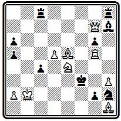
Мат в 5 ходов
В главном варианте осуществляется геометрическая идея — черный король проходит далекий путь по большой диагонали, от f3 до b7, чтобы получить там красивый мат двойным шахом: 1. Л:g2 Кр:е4 2. Крс3 Кр:d5 3. Сb8 Крс6 4. Фb7+ Кр:b7 5. Лb2#. В задаче много дополнительных разветвлений, но основой является указанный главный вариант, заканчивающийся эффектной комбинацией с пожертвованием ферзя.
Задача № 000—из посылки, получившей II приз на конкурсе Британской шахматной ассоциации 1866 г.
№ 000
И. Котц и А. Коккелькорн Конкурс Британской шахматной ассоциации 1866 II приз
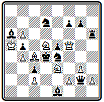
Мат в 5 ходов
Центральный вариант после двух ходов вступления разветвляется на две игры, содержащие жертвы ферзя и заканчивающиеся правильными матами. 1. Ке7 (с угрозой 2. Ф:d7+ и 3. Кс6#) 1... Сс8 2. Се6 Л:е6 (грозило 3. Кс6#) 3. Ф:е5+ Кр:е5(3... К:е5 4. Kf5#; 3... Л:е5 4. Кс6#) 4. f4+ Kpd6 5. K3f5# или 4... Kpd4 5. К7f5#. Черные на втором ходу могут играть 2... К:f2, тогда следует другая жертва ферзя — 3. Фd3+ К:d3 4. K7f5+ Kpe4 5. Cd5#; на 2... Кb8 решает 3. Фf3 Ф:f3 4. K7f5+. Остальные варианты содержат некоторые тонкости, но уже не являются идейными.
Отдельные произведения, вошедшие в сборник 1875 г., воплощают несколько необычные для того времени замыслы, о характере которых можно судить по миниатюре № 000.
№ 000
И. Котц и А. Коккелькорн 1875
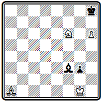
Мат в 5 ходов
План белых прост: играя слоном, скажем, через b2-а3-f8, дать мат с поля g7. Казалось бы, этому ничего нельзя противопоставить. Но у черных находится хитрый контрплан; пока белые будут маневрировать слоном, они успеют построить пат с замурованным слоном. Надо уничтожить пешку g3. Решает только 1. Ce5 Ch1 2. С:g3 С~ 3. Cd6 ~ 4. Cf8 ~ 5. Cg7#.
Основная идея этой задачи заключается в тонкой игре черных, в которой осуществляется критический ход с последующим замурованием. Подобную игру мы видели выше, в задаче № 98 Зеебергера, но там замурование было вынужденным, инициатива его осуществления принадлежала белым. Здесь же критический маневр осуществляется черными добровольно, по собственной инициативе. В отличие от темы Зеебергера критический ход с замурованием, проводимый в защите, называется темой Клинга, впервые осуществившего эту идею в игре белых в патовом этюде.
В защитительной игре черных могут воплощаться и другие идеи. В примере № 000 -
№ 000
И. Котц и А. Коккелькорн "Нейе берлинер шахцейтунг" 1865
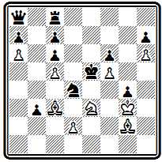
Мат в 4 хода
белые ходами 1. d3 и 2. Се4 намерены создать угрозы матов конем с полей с4 и g4. Единственная защита заключается в занятии ферзем поля g8, для чего необходимо увести мешающую этому ладью. 1... Лh8 и 2... Фg8— бристольское освобождение линии. Однако после 3. Сb2 черные попадают в цугцванг и получают мат на следующем ходу.
Еще сложнее замысел задачи № 000.
№ 000
И. Котц и А. Коккелькорн Конкурс Британской шахматной ассоциации 1873
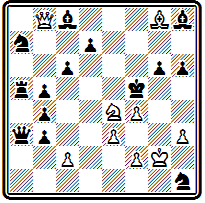
Мат в 5 ходов
Напрашивается план с жертвой ферзя на f6— 1. Фd6, 2. Фf6+ и 3. Kd6#, но сразу он неосуществим, так как черные могут защищать поле f6 ферзем с а1. Надо заставить черного слона закрыть главную диагональ: 1. Фс7, создавая угрозу 2. Kd6+ Kpf6 3. Фd8+ Kpg7 4. Фе7+ Кр:g8 5. Фf7#. Для защиты черные вынуждены играть слоном, чтобы освободить королю поле h8, и притом, памятуя об основной угрозе белых, в угол — 1... Ca1, оставляя диагональ свободной для ферзя. Белые, естественно, не могут еще играть 2. Фd6 из-за 2... Фb2 и стараются "выкурить" слона из углового поля. Они пользуются тем, что, стремясь оставить открытой дорогу ферзю, слон перешел через поле с3, на котором его может выключить белая пешка 2. c3. Ввиду угрозы мата на е5 пешку приходится брать, а тогда белые осуществляют, наконец, свой основной план: 2... С:с3 3. Фd6 ~ 4. Фf6+ С:f6 5. Kd6#. Ha 2... Кр:е4 также следует 3. Фd6 К:f2 4. Фd4+. Если 1... Кр:е4, то опять решает 2. Фd6 К:f2 3. Кр:f2 Kpf5 4. Cf7. По внешним признакам эта композиция является типичным образцом немецкого стиля того времени: яркий главный вариант с тихим скрытым вступлением и финальной комбинацией (4. Фf6+), заканчивающейся правильным матом. Содержание задачи, однако, характеризуется наличием новых идей, получивших в дальнейшем название логических. В ту пору они еще не привлекли к себе внимания проблемистов, и примеры их представления остались случайными и одиночными. Только в начале XX века те же И. Котц и К. Коккелькорн в своем труде "Индийская задача" положили начало систематическому изучению логических идей, которым предстояло стать знаменем новой школы в задачной композиции.
Менее характерны для Котца и Коккелькорна (как, впрочем, и для всех немецких проблемистов XIX века) трехходовые и особенно двухходовые задачи. Сложные замыслы, которые их занимали, требовали для своего воплощения большего простора во времени.
Позицию № 000 авторы считали своей лучшей трехходовкой.
№ 000
И. Котц и А. Коккелькорн "Паламед франсэ" 1865 почетный отзыв
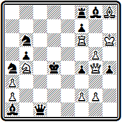
Мат в 3 хода
После 1. Фf5 белые грозят дать мат, жертвуя ферзя: 2. Фс5+ Ф:с5 3. Л:f4# или 2... Кр:с5 3. Лс6#. В последнем случае используется перекрытие черного ферзя королем по вертикали "с" от поля с6. Черные защищаются, переходя ферзем через с5, или, как принято выражаться, делая антикритический ход 1... Фс7. Но оказывается, что этот ход является одновременно критическим относительно поля с6 и белые могут выключить на нем черного ферзя от поля с2: 2. Лс6+ f6 3. Кс2#. Остальные варианты проще: 1... Фd1 2. Ф:f4+; 1... Крс3 2. Фd3+; 1... Лс8 2. Лс6+; 1... Kd5 2. Ф:d5+
Котц и Коккелькорн были активными пропагандистами немецкой школы. В отчетах по конкурсам, где они выступали судьями, в теоретических статьях они отстаивали свои принципы и критиковали чужие. Как композиторы Котц и Коккелькорн оказались менее активными. 50 избранных задач, составленных посте выхода их первого сборника, увидели свет в статье, помещенной в юбилейном сборнике Мюнхенского академического шахматного клуба (29).
Творчество другого видного немецкого проблемиста Филиппа Клетта ограничено XIX веком. После выхода сборника 112 задач, изданного им в 1878 г., он составил только 12 новых произведений. Они вместе с 12 переработками старых задач были помещены в статье, посвященной Клетту в упомянутом мюнхенском сборнике.
Сборник Клетта "Шахматная задача" (30) содержит большое введение, излагающее взгляды автора на основные принципы задачной композиции. Особенно много внимания Клетт уделяет определению и анализу содержания задачи.
"Внутреннее содержание задачи,— пишет он,— состоит в комбинации, то есть цепи идей и заключений, которые с неизбежной последовательностью, развиваясь друг из друга по нормам шахматных законов, приводят к требуемому конечному результату - мату". Комбинация должна быть правильной, иметь единственное решение в указанное число ходов. "Ценность комбинации обусловливается, с одной стороны, ее трудностью, а с другой — красотой".
Трудность комбинации заключается в тонкости, скрытости, глубине, остроумии замысла. Трудность зависит от характера ходов. Хорошо, когда ходы делаются далеко от их цели — короля, плохо, когда атака ведется со взятием фигур. Хороши ходы с жертвами ферзя или ладьи, плохо, если белые своим ходом запирают или связывают активную черную фигуру. Шахующие ходы не оставляют выбора, труднее тихие ходы, без объявления шаха.
Красота комбинации неотделима от тонкости ее развития. В большей или меньшей степени она зависит от вступительного хода и концовки главной игры. Матовая позиция должна быть чистой и экономичной, все белые фигуры должны использоваться для достижения конечной цели - мата.
Здесь же Клетт дает анализ возможных типов правильных матов: различными фигурами, с разных полей относительно короля, со связками и т. д.
Полемизируя с английскими авторами, Клетт пишет, что "теория дуалей — это не что иное, как следствие неправильного взгляда на природу задачи"; принятие ее означало бы смерть задачного стиля, разрабатывающего глубокие, содержательные комбинации, она немыслима для четырехходовок.
Интересна заключительная общая характеристика шахматной композиции: "Часто и не без основания шахматную задачу называют поэзией шахмат... Шахматная задача — это поэтическая математика или математическая поэзия".
Еще более отчетливо творческие принципы Клетта раскрываются в его практике.
Задача № 000— одна из лучших трехходовок Клетта — построена на цугцванг.
№ 000
Ф. Клетт 1878
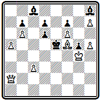
Мат в 3 хода
Сразу играть ферзем на b2 нельзя, так как черный король уходит через f6. Но когда черный слон, вынужденный двигаться, отнимет поле f6 у своего короля, этот ход решит: 1. Фа3 С:f6 2. Фb2 с двумя правильными матами: 2... Kpd5 3. Фb5# и 2... С~ 3. с4#. На 1... Cg7 или 1... Kpd5 следует 2. Фb4, 1... Кр:f6 2. Ф:d6+.
Пример № 000 интересен, как и предыдущий, тонкими маневрами ферзя.
№ 000
Ф. Клетт Конкурс решений в Дюссельдорфе 1876
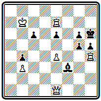
Мат в 4 хода
Белые нападают на слона f3, создавая угрозу его взятия — 2. Ф:f3 gh 3. Фf4+. Но какое из полей f1, f2, е3 или g3 выбрать для первого хода? Два последних отпадают, так как слон просто уйдет из-под удара. Надо становиться в засаду, чтобы после ухода слона грозить матом с f8. Выбор из двух почти равноценных полей f1 или f2 определяется вариантом 1... gh. На этот ход надо давать шах ферзем по диагонали c1-h6. При 1. Фf1 возможно только 2. Фс1+ и на 2... g5 мата не оказывается (3. Фb2 е5). В случае же 1. Фf2 белые могут после 1... gh давать шах 2. Фd2(е3)+ и на 2... g5 продолжать 3. Фd4 е5 4. Фd6# или 3... g4 4. Фg7#, с двумя правильными матами. Центральный вариант получается при защите 1... е5. Угроза опровергнута, новой создать нельзя, но белые ставят черных в положение цугцванга тонким ходом 2. Фf1, подготавливающим на 2... с5 эффектный ответ с жертвой ладьи и красивым далеким матующим ходом - 3. Л:h5+ gh 4. Фа6#. На 2... gh проходит 3. Фс1+ g5 4. Ф:с6#.
Сложное начальное положение задачи № 000, близкое к позиции из практической партии, не дает никаких указаний относительно пути решения.
№ 000
Ф. Клетт "Лейпцигер шахцейтунг" 1875
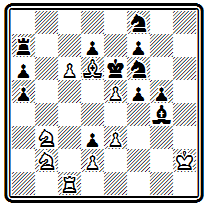
Мат в 4 хода
Стесненное положение черного короля наводит на мысль матовать его здесь же, на е6. В действительности цель достигается на b7 или f3. Первый ход 1. Ка4 создает угрозу 2. Kd4+ Kpd5 3. Лс5+. Главный вариант получается после 1... Kpd5. Теперь нельзя 2. Кb6+, так как король освободится через е4, а также 2. Кс3+ из-за 2... Кр:с6. Торопиться с ходами коня не следует, надо выждать, куда пойдет король. Парадоксальнейшее положение: ввиду выключения ладьи не проходит 2. Кс3+ но после 2. Лb1, когда ладья сама уходит с линии "с", этот ход становится угрозой. Маневр ладьи выглядит бессмысленным, но это единственный путь к цели.
На 2... Кр:с6 следует новая неожиданность — 3. Кb6 и после 3... Kpb7 красивый правильный мат 4. К:а5#, в котором сила стоявшей в засаде ладьи сказывается в поддержке коня b6. При 2... Кре4 3. Кс3+- король получает мат на f3. 1... dc 2. Кс5+. Не решает 1. Kd4+ из-за 1... Kpd5 и либо 2. Ка4 Ке6!, либо 2. Лс5+ Кре4 3. Ка4 Kd5!
Благодаря скрытости главной игры, неожиданности тихих ходов задачи Клетта очень трудны для решения, особенно его пятиходовки.
В примере № 000 белые дважды жертвуют свои ладьи.
№ 000
Ф. Клетт "Зонтагблеттер фюр шахфрейнде" 1861
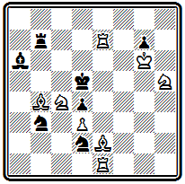
Мат в 5 ходов
Нельзя выпускать короля на с6, поэтому 1. Ле6 (с угрозой 2. Kf4#) 1... Кр:е6 2. Cg4+ Kpd5 3. Cd7 (снова отнимая у короля поле с6 и грозя 4. Kf4#) 3... Л : d7 4. Ле6, вторично жертвуя ладью на том же поле, но теперь, после блокирования поля d7 черной ладьей, с матом 4... Кр:е6 5. Kf4#.
В задаче № 000 идет борьба за связывание и развязывание белого коня е7.
№ 000
Ф. Клетт 1878
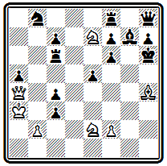
Мат в 5 ходов
После 1. Фd1 грозит безразличное отступление коня е2 с последующим 3. Kf5+ и 4. Фg4# или 3. Фh5#. Черные защищаются, связывая белого коня и освобождая noле g7: 1... Лd8 2. Kf4 Cf8. Коня можно развязать, жертвуя ферзя на d6, но это надо делать с темпом, а для этого необходимо предварительно пожертвовать еще слона с целью вскрыть шестую горизонталь 3. Cg5+ fg. Теперь ферзь играет на d6 с шахом 4. Фd6+ Л:d6 5. Kf5#; при взятии слона королем 3... Кр:g5 решает 4. Фh5+. Дополнительные варианты: 1... е4 2. Кg3 Лс5 3. Кf5+ Л:f5 4. К:f5+; 1... Лb6 2. Kd4 Лb3+ 3. К:b3 и 4. Kf5+; 1... cb 2. Kg3 b1К+ 3. Kpb2 Лb6+ 4. Кра(с)1.
В главном варианте композиции № 000 осуществляется комбинация Новотного с последующей активной игрой белого короля.
№ 000
Ф. Клетт "Паламед франсэ" 1865 почетный отзыв
Мат в 5 ходов
Жертва ферзя на g4 вынуждает перекрытие слона и ладьи черных, что позволяет белому королю освободить поле f6 для коня. Для осуществления этого плана белым надо с темпом включить своего слона b3. Они достигают этого ходом 1. Кb6, перекрывающим ладью и создающим угрозу мата по восьмой линии: 2. Лd7 Kph7 3. Лd8 и 4. Лh8#. Не защищает 1... Kf2, рассчитывая дать шах с полей е4 или g4, так как конь будет взят ферзем и угроза осуществится как раз на пятом ходу. Приходится брать слона 1... Л:b6, а тогда следует идейная жертва - 2. Фg4 С:g4 3. Kpg5 C~+ 4. Крh6 и 6. Kf6# или 2... Л:g4 3. Kp:е6 Л~+ 4. Kpd6+ и 5. Kf6#. Вот для чего понадобился белый слон: последний ход короля должен быть с шахом, иначе черные могут продолжать объявлять шахи; нужно создать и дополнительную угрозу 3. С:е6+ после 2. Фg4. Примечание: после 1. Кb6 Л:b6 2. Фg4 С:g4 проходит и 3. С:e6+ С:e6 4. Kp:e6 ~ 5. Kf6#.
Не видно, как простыми средствами избежать этого. Если Вам удастся исправить задачу – присылайте на сайт.
Основная идейная игра, развертывающаяся после второго хода, осложнена дополнительным вступительным ходом —типичный прием для немецких композиторов того времени. В редких случаях (например, в приведенных выше композициях Котца и Коккелькорна) такое вступление логически связывалось с основной идеей задачи, в большинстве же случаев, как в рассматриваемой задаче Клетта, это усложнение представляло собой простое ее удлинение.
В качестве примера из последнего периода творчества Клетта приведем задачу-
Ф. Клетт "Мюнхенер нейесте нахрихтен" 1899
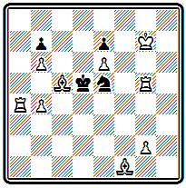
Мат в 5 ходов
Она содержит ряд тихих вариантов с тонкими и скрытыми маневрами белой ладьи: 1. Ла2 цугцванг; 1... Крс6 2. Лb2 Kpd5 3. g3 Кре4(е6) 4. Лd2 или 3... Крс6 4. Сс4; 1... Кр:е6 2. Лd2 Kd3 3. С:d3 Kpd7 4. Cf5+; 1... Кре4 2. Ле2+ Kpf4 3. Лg:е5 и 4. Cf2 или 2... Kpd3 3. Лg:е5 Крс3 4. Л5е3+.
Характеризуя творчество Клетта, Венинк писал: "Его идеалами были: трудность и тонкость, трудность и экономия, трудность и чистота мата в главной игре, трудность и еще раз трудность". И это справедливо. Вряд ли можно указать в истории композиции другого проблемиста, задачи которого отличались бы такой трудностью, как Клетта.
Наиболее четкое и законченное выражение принципы немецкой школы получили в творчестве Иоганна Бергера. Разносторонний шахматный деятель, автор трудов по теории шахматной игры, многолетний редактор журнала "Дейче шахцейтунг", Бергер был и выдающимся композитором.
Развивая основные положения Клетта, Бергер в книге "Шахматные задачи и искусство их составления", изданной в 1884 г. (31), сформулировал художественные требования, которым, по его мнению, должна подчиняться шахматная задача.
Два первых требования относятся к заключительной позиции в главном варианте и состоят в соблюдении чистоты и экономичности мата.
Третье правило требует, чтобы в задаче были тихие ходы. Бергер устанавливает понятие "матфюрунг", которым он обозначает заключительную серию шахующих ходов, непосредственно завершающихся матом. Такому форсированному финалу в задаче должно предшествовать введение, состоящее из тихих ходов.
Четвертое правило обусловливает число ходов введения и задачи в целом. "Введение должно находиться в гармоническом соответствии с финалом и иметь лишь такое число ходов, которое необходимо для достаточной маскировки финала или углубления идеи".
Пятое правило указывает на использование вступительного хода для скрытой подготовки идейной игры, недопустимость коротких или грубых форсированных угроз и предпочтительность цугцванга.
Шестое правило рекомендует для усложнения решения развивать сеть вариантов и создавать ложные следы; для двух - и трехходовок соблюдение этого правила совершенно обязательно.
Седьмое требование состоит в постепенном усилении ходов в процессе решения от первого хода к последнему. Этот принцип нарастающей силы наступательных ходов свидетельствует о глубоком понимании автором существа задачи и его большом вкусе.
Восьмое правило говорит о необходимости такого выбора идеи и замысла задачи, чтобы по крайней мере в главной игре было обеспечено выполнение всех сформулированных выше законов.
Девятое требование состоит в естественности начальной позиции.
Прекрасными иллюстрациями выполнения этого кодекса являются задачи самого Бергера. Кульминацией его творчества явилось десятилетие на грани 70 и 80-х годов.
Композиция № 000 интересна тем, что финал главной игры состоит из трех разветвлений, заканчивающихся правильными матами, причем два из этих вариантов содержат жертвы белого ферзя.
№ 000
И. Бергер Конкурс Средне Германского шахматного союза 1876 I приз
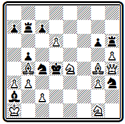
Мат в 4 хода
После вступления 1. Фе7 К:g1 2. Kf6 грозит мат 3. Фе4#. В зависимости от зашиты черных следуют различные заключительные ходы: 2... К:d6 3. Фе5+ Кр:е5 4. Сс3#, 2... Kd2 3. Фе3+ Кр:е3 4. Сс5# и 2... Ке5 3. d7 Кре3 4. Фс5#. Дополнительный вариант 1... Лh7 2. Кс3 Л:е7 3. Kf3+.
Задачу № 000 сам Бергер относил к числу своих содержательнейших произведений.
№ 000
И. Бергер Конкурс Западно Германского шахматного союза 1876 I приз
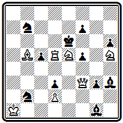
Мат в 4 хода
Первый ход 1. Фf4 создает угрозу 2. Ф:h6+ Кр:d5 3. Сс6+ или 2... f6 3. Kf4+. В комментариях Бергер особо подчеркивает, что задача содержит только эту угрозу. Главная игра возникает после взятия ладьи королем 1... Кр:d5, на что следует новый тихий ход 2. К:f7. Грозит 3. Фе5#, а при 2... Cd4 проходит финальная комбинация 3. Фе4+ с двумя правильными матами 3... fe 4. Kf4# и 3... Кр:е4 4. Сс6#. Если же черные защищаются, уходя королем, то следует новый правильный мат: 2... Кре6 3. Фе5+ Кр:f7 4. Фе8#. Еще один правильным мат получается в варианте 1... Се3 2. Ф:е3 f4 3. Ke4+ fe 4. Ле5#. Есть еще вариант с чистым, но неэкономичным матом: 1... Kd6 2. Л:d6+ Кре7 (2... Кр:d6 3. Kg6+) 3. Кс6+ Kpf8 4. Лd8#. 1... Ка5(d8) 2. Cd7+ Кр:d5 3. Kf6+ или 2... Кре7 3. Фh4+.
Позиция № 000 - сравнительно редкий у немецких авторов пример задачи, содержащей идейные варианты, разветвляющиеся сразу после первого хода.
№ 000
И. Бергер Конкурс в честь Андерсена 1877 I приз
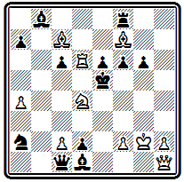
Мат в 5 ходов
В первом из них 1. Фf1 С:с7 2. Фd3 С:d6 3. Ке2 С:е2 4. Фе3+ осуществляются два симметричных правильных мата слоном - 4... Kpd5 5. С:е6# и 4... Kpf5 5. С:е6#, в другом матующей фигурой является ладья: 1... Фа3 2. Л:е6+ Кр:d4 3. Фс4+ Кр:с4 4. Л : с6+ также с двумя симметричными матами — 4... Крb4 5. Лс4# и 4... Kpd4 5. Лс4#. Задача имеет ряд дополнительных вариантов, содержащих некоторые тонкости.
Разобранные задачи Бергера хорошо иллюстрируют основные положения немецкой школы.
Трудный главный вариант, представляющий цепь сложных ходов с жертвами основных белых фигур, заканчивается правильными матами;
широко развитая сеть дополнительных вариантов, создающих много затруднений даже после обнаружения главной игры;
сходство начальной позиции с положением из практической партии — все это находится в полном соответствии с бергеровским кодексом.
Книга Бергера состояла из трех частей: теоретической, где излагались основы задачной композиции и ее художественные законы; практической, содержавшей 100 избранных задач автора с их решениями, и аналитической, посвященной сравнительному изучению конструкции задач сборника. Именно в последней части был дан детальный анализ девяти художественных законов, иллюстрированный задачами автора.
Большое значение Бергер придавал соотношению между числом ходов введения и матового финала, "матфюрунга". Достаточно сказать, что все задачи в его сборнике классифицированы именно по этому признаку. Третье правило трактовалось им самим в том смысле, что чем больше в задаче тихих вступительных ходов, чем относительно короче форсированный финал, тем ценнее задача. Отсюда вытекало искусственное удлинение задачи. А это находилось в противоречии с правилом четвертым, требовавшим гармонии между всеми частями композиции. В дальнейшем это противоречие привело к разложению немецкой школы. В сборнике "Задачи, этюды и партии", выпущенном Бергером в 1914 г. (32), уже нет ни правил, ни теоретической части, а все задачи расположены в строго хронологическом порядке.
Значительную роль в пропаганде и практической реализации идей немецкой школы, сформулированных Бергером, сыграли конкурсы составления задач, которые приурочивались к проводившимся каждые два года конгрессам Германского шахматного союза. Такие конкурсы состоялись по случаю первых семи конгрессов: I — Лейпциг 1879 г.; II — Берлин 1881 г.; III — Нюрнберг 1883 г.; IV — Гамбург 1885 г.; V — Франкфурт-на-Майне 1887 г.; VI — Бреславль 1889 г.; VII — Дрезден 1892 г. Затем наступил перерыв, и следующий конкурс был организован только во время XIII конгресса в 1902 г. Первый конкурс проводился по системе посылок из трех-, четырех- и пятиходовых задач, а все последующие отдельно по разделам трех- и четырехходовых задач, к которым только в конкурсе 1883 г. был добавлен раздел пятиходовок.
Вот задачи, отмеченные на этих состязаниях высшими отличиями.
Победителями первого конкурса стали Котц и Коккелькорн. В задаче № 000 в центральном варианте
№ 000
И. Бергер Конкурс Германского шахматного союза 1879 I приз
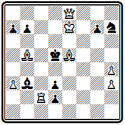
Мат в 4 хода
1. Cb8 dc 2. Фс8 Крd4 3. Фс3+ Кр:с3 4. Се5# или 3 ... Кре4 4. Фd3# , 2... Кре4 3. Фf5+ Кр:f5 4. Cd3# или 3... Kpd 4 4. Фе5# после двух вступительных ходов проходит решающая комбинация с аналогичными жертвами ферзя и четырьмя правильными матами. Дополнительные варианты: 1... Кре4 2. Фg6+ Крf3 3. Ф:d3+, 1... Kpd4 (С:с2) 2. Kpd8 Крc5 3. Фе5+, угрозы 2. Фf7 (d7) + и 2. Kpd8. Если основной идеей композиции считать жертвы ферзя и получающиеся затем правильные маты, то для ее выражения достаточно трехходовой формы, вступительный ход является лишней надстройкой, нарушено четвертое правило Бергера.
В. Шинкман осуществил такую идею в форме миниатюры
В. Шинкман "Дюбук чесс джорнэл" 1890
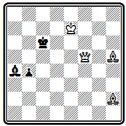
Мат в 3 хода
1. Се2 Крb6 2. Фa5+; 1... Крb7 2. Фс8+
Однако эта надстройка представляет собой трудный тихий ход, весьма усложняющий решение и потому оправдываемый третьим правилом.
Главный вариант проблемы № 000 приводит к двум аналогичным жертвам ферзя и правильным матам на довольно далеком расстоянии друг от друга.
№ 000
Ф. Дуббе Конкурс Германского шахматного союза 1881 I приз
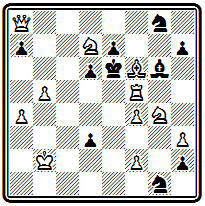
Мат в 4 хода
Черный король обнаруживает большую подвижность. 1. Сс3 С:f5 2. Фс8 Kpd5 3. Фc4+ Кр:с4 4. Ке3# или 2... Kpf7 3. Ф:g8+ Kp:g8 4. Кh6# (2... С:g4 3. Kf6+, 2... Kh6 3. Kde5+, 2... ~ 3. Ke5( f6)+ ). Еще один правильный мат проходит в дополнительном варианте: 1... Кр:f5 2. Кс5 К:h3 3. Ке3+ Кр:f4 4. Ке6# (1... Кf6 2. Kh6 Кр:d7 3. Фс6+; 1... h1Ф 2. Kf8+ Кр:f5 3. Ке3+; 1... ~ 2. Фd5+ Кр:d7 3. Фс6+ ).
Классической по простоте и изяществу построения, тонкости и эффектности замысла является задача № 000.
№ 000
И. Бергер Конкурс Германского шахматного союза 1883 I приз
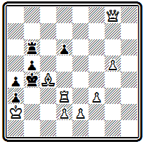
Мат в 4 хода
Тихими, казалось бы совершенно безобидными, ходами белые отдают две фигуры и завлекают черного короля в матовую сеть, где один ферзь с помощью пешек дает ему три правильных мата. 1. Лd5 Кр:с4 2. Фh8 Кр:d5 3. е4+ Крс6 4. Фс8#, 3... Кре6 4. Фе8# и 3... Крс5 4. Фс3# . После первого хода — цугцванг; на 1... Лb7 следует 2. Фd8, грозя матом после 3. Ф:d6+ на 2... Лс7( b6, b8, d7) — взятие ладьи; на 1... Кра5 решает также 2. Фd8 со взятием ладьи после единственного ответа черных 2... Крb4 3. Ф:b6.
Сложная и трудная для решения позиция № 000 содержит в главном варианте интересную идею последовательного освобождения линий для далекого маневра белого ферзя.
№ 000
Ф. Шрюфер Конкурс Германского шахматного союза 1883 I приз
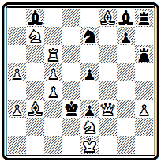
Мат в 5 ходов
Вступление 1. Са2 создает угрозу 2. Cb1+ Кр:с4 3. Фе4+. Черные защищают поле е4—1... Сh7, а после жертвы ладьи "по Новотному" 2. Лg6, восстанавливающей угрозу, берут ладью 2... С:g6, но теперь перекрыта черная ладья и можно пожертвовать коня 3. Kd6 c угрозой 4. Cb1#. Черные берут коня 3... С:d6 — ведь это не создает у них никаких слабостей. Однако белые играли не на ослабление неприятельской, а на усиление собственной позиции. Угроза на е4 была отвлекающим маневром, позволяющим освободить дорогу ферзю к полю b1 — 4. Фb7. Теперь неизбежен чистый, а в случае 4... Л:f8 даже правильный мат 5. Фb1# . Каждый из трех первых ходов белых выполнял задачу расчистки пути для ферзя.
В несколько ином стиле составлена композиция № 000 .
№ 000
Ф. Шрюфер Конкурс Германского шахматного союза 1885 I приз
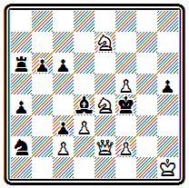
Мат в 4 хода
Тихими незаметными ходами ферзь и кони сплетают тонкую сеть, в которой запутывается черный король. 1. f 6 (с угрозой 2. Ф: h 5) 1... С: f 6 2. Kg 5 (черные собирались ходом слона на g5 опровергнуть угрозу, теперь же белые сами идут на это поле) 2... С:е7 3. Kh 7 Kpf 5 4. Фе4# или 2... Кр: g 5 3. Фе3+ Kpg 4 4. Фg 3# . Оба мата правильные. Третий правильный мат получается в варианте 1 ... С: f 2 2. Kg 6+ Kpf 5 3. Ф: h 5+ Кре6 4. Kf 8 # . На 1... Cc 5 проходит угроза 2. Ф: h5 С:е7 3. Kg3.
Задача № 000 — последний значительный конкурсный успех Бергера.
№ 000
И. Бергер Конкурс Германского шахматного союза 1887 I приз
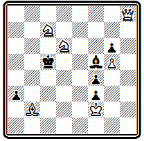
Мат в 4 хода
По своему характеру она существенно отличается от прежних работ. После 1. Фа8 грозит 2. С:а 3+ Kpd 4 3. С b4. Правильный мат получается в варианте 1... b а 2. Ф d 5+ Кр b 6 3. Ка8+ Кра6 4. Фа2# с использованием вскрытия вертикали "а"; на 2... Кр b 4 следует чистый мат 3. Фс4+ Кра 3 4. К b 5 #. Интереснее, однако, варианты, создаваемые слоном, хотя они и не кончаются чистыми или правильными матами: 1... Cd 7 2. Ке4+ Кр b 6 3. Сс3 Кр:с7 4. Са5 # и 1... Сс8 2. Ф d 5+ Кр b 6 3. Кс4+ Кр:с7 4. Се5 # — в обоих случаях белые используют блокирование поля у черного короля; любопытны разветвления 1... Кр: d 6 2. Се5+ Крс5 3. Фа5+ с двумя симметричными матами и 1... Кр b6 2. Ф b7+ Крс5 3. Се5, 1... Се4 2. К:е4 + Кр b6 3. Се5 с тихим ходом слона.
В примере № 000
№ 000
Р. Адам Конкурс Германского шахматного союза 1889 I приз
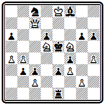
Мат в 4 хода
идейная игра получается при 1. Kg7 Kpd4 2. Kh5 gh 3. Ф h 7 Кр: d 5 4. Фе4# (2... Кр: d 5 3. Ф b 7+, 2... Кре5 3. Фс4, 2... ~ 3. Ф:с 3+ ); правильный мат получается еще в варианте 1... Кр: d 5 2. Ф b 7+ Кре5 3. Фе4+ Kpf 6 4. Фd4#. Остальные варианты: 1... С: g 7 2. Фс4(угроза) 2... Кре6 3. Ф: f 4, 1... Л f 1 2. Фс4 Л: f 3 3. gf , 1... Л d 1 2. Ф f 7(угроза) 2... С: g 7 3. Ф: f 4+.
Задача № 000 имеет всего один вступительный ход, а дальше следует трехходовый форсированный финал:
№ 000
О. Фусс Конкурс Германского шахматного союза 1892 I приз
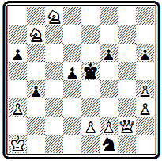
Мат в 4 хода
1. Фg7 d 4 2. Фс7+ Кре4(е6) 3. Kc 5+ Kpd 5 4. К b 6# и 3... Кр f 5 4. Ке7# или 2... Kpd ( f )5 3. Ке7+ Кре6 4. Kd 8 # и 3... Кре4 4. Кс5 #. Три первых из этих четырех матов правильные. Правильные маты осуществляются еще в угрозе 2. Kcd 6 ~ 3. Фе7+ Kpd 4 4. Ф: f 6 # и в дополнительных вариантах 1 ... Kpd 4 2. Ф: f 6+ Крс4 3. К b 6+ Кр b 5 4. а4 # и 1... b3 2. Фе7+ Kpd 4 3. Ф: f 6 + Крс4 4. Kcd6#.
Приведем еще несколько произведений приверженцев немецкой школы из числа премированных на других конкурсах.
Задача № 000 принадлежит австрийскому проблемисту Роберту Брауну, создавшему свой стиль.
Особенностью его задач было наличие элементов симметрии.
№ 000
Р. Браун Конкурс Средне Германского шахматного союза 1876 почетный отзыв
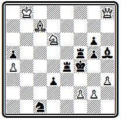
Мат в 4 хода
Создавая какой-либо интересный вариант, обычно заканчивающийся правильным матом, Браун добивался осуществления и второго симметричного варианта. В рассматриваемом примере ось симметрии видна уже в начальном положении —это диагональ b8-f4. Решение содержит два симметричных варианта с шахами белому королю и отвлекающими жертвами ферзя, приводящими к развязыванию коня и блокированию поля: 1. Фс 3 Л b 4+ 2. Kb 5 + Кре4 3. Ф d4+ Л: d 4 4. Кс 3# и 1... Л f 8+ 2. Ке8+ Kpf 5 3. Ф f 6+ Л: f 6 4. Kg 7 # .
Сборник избранных задач Р. Брауна был издан в уайтовской серии в 1913 г. (33).
В примере № 000 начальная позиция не обнаруживает никакой симметрии, но она появится в финале главного варианта.
№ 000
А. Каудерс "Нуова ривиста дель скакки" 1880 I приз
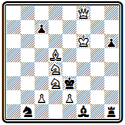
Мат в 4 хода
Решение достигается оригинальным и неожиданным маневром 1. Кре7 Кр: d 4 2. Кре8. Белый король, вместо того чтобы приближаться к черному, уходит на край доски с целью освободить путь своему ферзю. Необходимость выбирать безопасные поля и приводит к несколько вычурному маршруту. Дальше, в зависимости от ходов черного короля, следуют два симметричных правильных мата: 2... Кре3 3. Ф f 4+ Кр:е2 4. Cf 3# или 2... Крс3 3. Ф b 4+ Кр:с2 4. С b 3#, на 2... Кр: d 5 решает 3. Фс5+. Дополнительный вариант 1... Kpd 2 2. Ф f4 + Крс 3 3. К b5+.
Композиция № 000 отступает от принципов немецкой школы в том отношении, что в ней нет одного, ярко выраженного варианта, а замысел составляет комплекс нескольких вариантов, содержащих интересные моменты и заканчивающихся правильными матами.
№ 000
Р. Вейнгеймер "Нуова ривиста дель скакки" 1892 I V приз
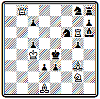
Мат в 4 хода
В трех идейных вариантах развертывается игра с тихими жертвами белых фигур для вскрытия линий: 1. Се 2 de 2. Kh4 gh(2... е 1 Ф 3. Фе 8+) 3. Ф b1+ Kpf3 4. Ф h1#; 1... Kpf5 2. Фе 8 К : е 8 (2... Ке 7 3. К : е 3+) 3. Kh4+ gh 4. С :d3#; 1... Cf8 2. Л :g5 de 3. Ф b1+ Kpf3 4. Ke1#. Дополнительные варианты 1... hg 2. Ф: c 7 de 3. Фс 6+; 1... Kd5 2. Фс 8 Kf4 3. Ле6+, 2... Kb 6+ 3. Л: b 6 и 2... de 3. Ф g 4+.
Построение четырехходовок такого стиля ставит чрезвычайные технические трудности, поэтому он стал развиваться главным образом в трехходовой форме. Рассмотрим еще задачу № 000, которую критика того времени признавала "задачей большого стиля".
№ 000
З. Штейнер "Амстердамер веекблад" 1898 I приз
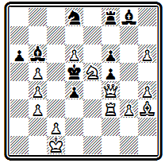
Мат в 4 хода
Главный вариант после 1. Ле3 de 2. Kf 7 разветвляется на ряд продолжений, заканчивающихся правильными матами: 2... Cd 4 3. Фе4+ Кр:е4 4. Cg 2# или 3... fe 4. с4#, 2... Кре 6 3. Ф :f5+ Кр :f7 4. Ф b5#, 2... К(Л, С): f 7 3. c 4+ Кре6 4. С: f 5#, 2... ab 3. Ф: f 5 Крс6 4. Фе4( f 3)#. Дополнительные варианты менее интересны: 1... ab 2. Cg 2 + Кре 6 (2... Кр: d 6 3. Кс4+) 3. Ф: f 5+; 1... С b~ 2. Kf 7 и 3. Ф: f 5+; 1... К~ 2. Ф f 3+ Кр: d 6 3. Фс6+.
В этом примере, как и в ряде уже рассмотренных произведений немецкой школы, перед нами выступает противоречие между отдельными пунктами кодекса Бергера. По существу задача представляет собой удлиненную трехходовку, в которой добавленное вступление не стало органической частью.
Возможны были два выхода из этого противоречия. Один состоял в том, чтобы идейные ходы белых объединить общим стратегическим замыслом, единой логической мыслью. Этот путь намечался уже в ранних задачах Котца и Коккелькорна, но решительно был провозглашен ими лишь в начале XX века, когда, порвав с традициями старых проблемистов и отказавшись от бергеровских правил, они заложили основы нового направления, так называемой логической школы.
Другой путь заключался в отказе от искусственного удлинения задачи, хотя бы оно состояло из тихих ходов и приводило к усложнению решения. Это был путь разработки трехходовых задач.
Рассматривая задачи немецкой школы, мы не привели почти ни одной трехходовки. Это не случайность. Практически наиболее соответствующими принципам школы оказались четырех - и пятиходовые задачи. Трехходовой форме немецкие проблемисты уделяли значительно меньше внимания и заметных успехов в ней не имели. Достаточно сказать, что почти во всех конкурсах Германского шахматного союза в разделе трехходовок победителями выходили иностранцы, в частности чехи (соответствующие примеры читатель найдет в следующей главе).
Исключение составляет задача № 000, разделившая I приз в конкурсе 1887 г.
№ 000
Р. Адам Конкурс Германского шахматного союза 1887 I приз
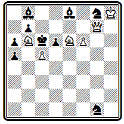
Мат в 3 хода
Главный вариант: 1. Ф h 7 dc 2. Kd 8+ Kpd 6 3. Ф h 2# или 2... Кр b 5 3. Ф b 1# с двумя далекими правильными матами ферзем. К третьему правильному мату приводит дополнительный вариант 1... Кр b 5 2. Фс2 Кр b 4 3. Ф b 2 # .
Приведем еще интересную, легко построенную трехходовку Бергера № 000, которую он поместил на титульном листе своего сборника 1914 г.
№ 000
И. Бергер "Франкфуртер цейтунг" 1887 I приз
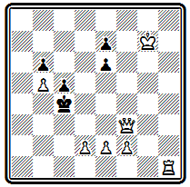
Мат в 3 хода
Первым ходом 1. Л f 1 ладья становится в засаду за пешку f2, чтобы поддержать ее в варианте 1... Kpd 4 2. Фd3+ Кре5 3. f 4#. Второй вариант с правильным матом: 1... Кр b 4(: b 5) 2. Л b 1+ Кра4 3. Фа8# (1... е5 2. Л b1 ).
В конце XIX века в Германии был организован ряд больших международных конкурсов, в том числе для трехходовых задач. Активную деятельность как критик, редактор и судья проявил А. Байерсдофер. Сборник его задач и критических статей был издан вскоре после его смерти И. Котцем и К. Коккелькорном под названием "К познанию шахматных задач" (34). Инициативе Байерсдорфера были обязаны тематические разделы на составление трехходовок с правильными эхо-матами в ряде конкурсов.
С одним из этих состязаний связан недостойный инцидент, вызвавший в свое время отклики во всей мировой печати. На конкурс газеты "Мюнхенер нейесте нахрихтен" 1893 г. поступила задача с шовинистическим девизом, представлявшим собой оскорбление чешского народа. Девиз тем не менее был опубликован в списке поступивших произведений. Чешские композиторы заявили справедливый протест и потребовали снятия девиза. Это сделано не было, и чешские участники вынуждены были снять свои задачи с конкурса. Вспоминая об этом инциденте, Хавель говорил, что он сильно повлиял на обострение отношений между чешскими и немецкими композиторами, как и длительное недружелюбное отношение И. Котца к чешской школе.
Наиболее активно разрабатывала трехходовые задачи группа венских композиторов: К. Эрлин, М. Фейгль, О. Немо и др.
В главном варианте композиции № 000 проводится острая идея отвлечения пешки путем жертвы ферзя
№ 000
К. Эрлин Конкурс Вюрцбургского шахматного клуба 1895 III приз
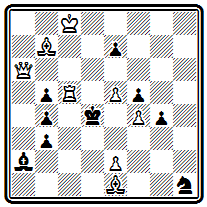
Мат в 3 хода
1. Фа3 b а 2. Лс3~ 3. e 3#. В дополнительном варианте реализуется мотив засады 1... b 2 2. Лс4+ bc 3. Фа7#, что стало возможно благодаря включению белого ферзя на поле е3. Третий правильный мат в варианте 1... Кр:с5 2. Ф: b 4+ (угроза) Кр b 6 3. Ф d4# .
Центральный вариант задачи № 000 содержит красивый тихий маневр ферзя, основанный на отвлечении черного слона:
№ 000
М. Фейгль Конкурс Германского шахматного союза 1892 III приз
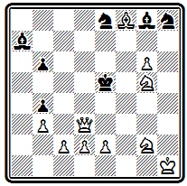
Мат в 3 хода
1. е4 С b 8 2. Ф f 1 с неизбежным 3. Фа1#, что раньше опровергалось ответом 2... b 5. К главной игре добавлена жертва ферзя для отвлечения коня и блокирования поля в угрозе 2. Ф d 6+ К: d 6 3. Cg 7# , комбинация, весьма характерная для задач венских авторов. Есть и третий правильный мат 1... Kpf 6 2. Ф d 8+ Кр: g 6 3. Kf 4#.
Отправным пунктом для венских композиторов служил все тот же кодекс Бергера: в задаче должен быть главный вариант с тихим ходом, жертвами, правильным матом; необходима также дополнительная игра, некоторая трудность решения и т. п. Однако вскоре появляются отклонения. Трехходовая форма позволяет заканчивать правильными матами не только главные, но и некоторые дополнительные варианты, грань между ними стирается, содержание задачи определяется не одной главной игрой, как прежде, а всем комплексом вариантов, заканчивающихся правильными матами.
Приведем несколько примеров. Позиция № 000 содержит ряд вариантов, заканчивающихся правильными матами:
№ 000
О. Немо Конкурс Горлицкого шахматного клуба 1886 специальный приз
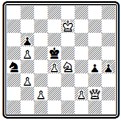
Мат в 3 хода
1. Ф g 1 (угроза 2. f 3 gf 3. Kf 6#) 1... Кр: d 4 2. Kpd 6 Kp :е4 3. Ф: g 4#; 1... Кр:е4 2. Ф: g 4+ Kpd 5 3. с4#; 1... Кс3 2. К f 6+ Кр: d 4 3. f 4#; 1... Кс5 2. Kf 6+ Кр: d 4 3. Фа1 # .
Задача № 000 построена в таком же плане, только маты здесь несколько сложней.
№ 000
К. Эрлин "С.-Пб. цейтунг" 1898 II приз
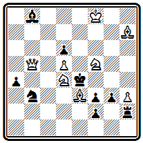
Мат в 3 хода
Первый ход 1. Cg 5 создает угрозу 2. Ке6; при ответе 1... Л: h 3 и затем 2... Л: b 7 угроза заканчивается правильным матом 3. K : g 3 #. Тихий ход с жертвой коня осуществляется в варианте 1... Ка5 2. К: f 3 Кр: f 3 3. Kh 4#; блокирование поля используется при 1... Кс5 2. Ке3+ Кр: d 4 3. Ф b 2# и 1... К: d 4 2. К: d 6+ Кре5 3. Kf 7 # . Ложные следы: 1. К c 6? Ка5 и 1. Ке6? Кре5 2. Kh 6 Кс5.
Разнообразием матовых картин интересна проблема № 000.
№ 000
М. Фейгль "Бритиш чесс мэгезин" 1897 II приз
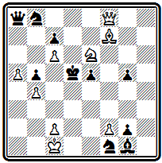
Мат в 3 хода
Варианты все форсированные, жертв нет, и весь ее смысл именно в сочетании правильных матов: 1. c 3(угроза 2. Kc 5+) 1... Кре4 2. Кс5+ Kpf 5 3. Ch 5#; 1... Kd 7 2 Kf 4+ Kp :с6 3. Cd 5#; 1... Кр:с6 2. Kd 8+ Kpd 7 3. Ce 6#; 1... Kpc 4 2. Kf 4+ Крс3 3. Ке2#.
Подобные задачи венских авторов приближаются к произведениям чешской школы, но они сохраняют некоторые особенности, не позволяющие отнести их к этому стилю.
Задача № 000, наоборот, лишена разнообразия матов, во всех трех идейных вариантах фактически дается один и тот же правильный мат ферзем по большой диагонали. Однако приходят к нему белые во всех случаях разными путями, используя различные ослабления в позиции черных.
№ 000
М . Фейгль " Афтонбладет " 1899 I приз
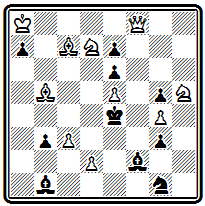
Мат в 3 хода
1. С b 6(с угрозой 2. d 3+) 1... С: b 6 2. Ф f 1 Ке2 3. Ф g 2# — черные открыли путь ферзю к полю f1; 1... ab 2. Кра7 ~ 3. Фа8# — черные перекрыли слона f2, и король может освободить поле ферзю; 1... Kpd 5 2. Фс8 Кре4 3. Ф b 7# —до хода короля ферзь не мог оставить без охраны поле f3.
Венские композиторы развили большую активность. По стилю к ним примыкал ряд проблемистов других стран, как, например, Э. Прадинья (Франция), И. Иесперсен (Дания) и В. Марин (Испания).
В конце XIX века этот стиль преобладал на конкурсах трехходовых задач, проводившихся на континенте Европы. Он продолжал развиваться и в начале XX века. Иногда этот стиль называют даже школой, именуя ее венской или континентальной. Это не совсем правильно. Для того, чтобы считаться школой, у данного направления нет достаточной самостоятельности. Правильнее, как это и делает ряд авторов, считать его ветвью немецкой школы с некоторыми стилевыми особенностями, отличающими его от основной линии.
Мы ничего не говорили в настоящей главе о двухходовках.
Отношение немецкой школы к этому виду задач наиболее полно выразил А. Байерсдорфер:
"Двухходовка — в лучшем случае остроумная игра; я не могу считать ее за задачу. Подумайте — одноходовая комбинация.
Не двухходовая, а именно одноходовая, так как матуюший ход не принадлежит к самой комбинации, он ее результат".
Немецкие композиторы над двухходовками работали очень мало. Открытия американских и английских композиторов их не интересовали, а выдвинутые ими принципы построения задач они категорически отвергали.
Позиция № 000 содержит острый первый ход, жертвующий ферзя и открывающий шах белому королю:
№ 000
И. Котц и А. Коккелькорн "Остеррехише лезегалле" 1881
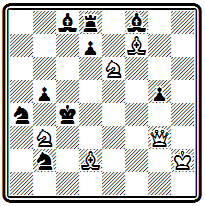
Мат в 2 хода
1 . Ф d 6 С: d 6 + 2. Kf 4 # . Мотивировкой хода служит перекрытие черной пешки d7, препятствующей в начальном положении мату слоновой батареей. Правильных матов нет, чистый мат получается при взятии коня пешкой 1... de 2. Ка5 # .
Задача № 000 также выделяется ярким первым ходом, жертвующим ладью и выключающим из игры своего ферзя —
№ 000
И. Бергер "Детройт фри пресс" 1876 II приз
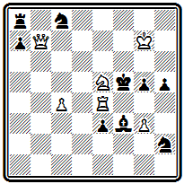
Мат в 2 хода
1. К c 6. Грозит 2. Kd 4#, на взятия ладьи следуют два правильных мата 1... Кр:е4 2. Ф b 1# и 1... С:е4 2. Ф d 7#. Чистый мат проходит при использовании блокирования поля 1... g 4 2. Ле5 #.
Двухходовка № 000 интересна тем, что в начальном положении готовы ответы на все ходы черных.
№ 000
Р. Лерме "Нью-Йорк штатс цейтунг" 1894 I приз
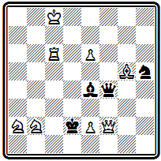
Мат в 2 хода
Но у белых есть лишь один ход 1. Ch 6, не предоставляющий черным никаких новых возможностей. Пешка е2 проявляет максимальную активность: 1... Ф g 5(: h 6) 2. e 3#, 1... C ~ 2. е4# (этот мат правильный, если слон берет ладью 1... С:с6), при 1... Cd ( f )3 пешка берет слона 2. ed ( ef )#.
Приводим один пример двухходовки из работ проблемистов венской группы (№ 000).
№ 000
М. Фейгль "Ауструмс" 1897 I приз
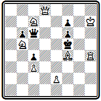
Мат в 2 хода
Как обычно, здесь имеется несколько вариантов, содержащих правильные маты: 1. Фа8 Кре4 (Ф:а8) 2. Kd 6#, 1... Ф: b 5 2. е4# и 1... Ф:с7 2. Kd 4#.
К концу XIX века классическая немецкая школа фактически прекращает свое существование. Продолжает развиваться только одна ее ветвь, разрабатываемая венской группой проблемистов. В начале XX века на базе немецкой школы разовьется новое направление, возглавляемое Котцем и Коккелькорном, которое получит название новонемецкой, или логической, школы.